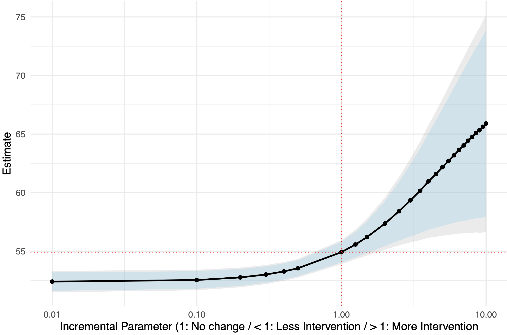

Video-as-Treatment
Our framework gpi_pack supports sequential video data. The Video-as-Treatment setting is useful when you are interested in estimating the causal effect of a video feature that changes across segments, while controlling for the other information contained in the video. For example, the treatment may indicate whether a candidate appears in each segment of a campaign advertisement.
Unlike the static Text-as-Treatment and Image-as-Treatment settings, video treatments often form a sequence. gpi_pack therefore uses a dynamic estimator that accounts for the treatment and representation history.
Note
This part is based on our papers GenAI Powered Dynamic Causal Inference with Unstructured Data and Causal Inference with Video Features as Treatments. Please refer to the papers for the assumptions, estimand, and application examples.
Overview of the Data
Suppose you have one sequence for each unit. Each video is divided into fixed-length segments, and every observed segment has one binary treatment value. We use the following notation:
N: number of units.T: maximum number of segments after padding.S_i: number of observed segments for uniti.F_text: number of features in an aligned text or vector representation.D,H, andW_video: dimensions of a temporally pooled Cosmos representation.
The main arrays used below are:
R_textwith shape[N, T, F_text]: aligned transcript or vector representations.R_videowith shape[N, T, D, H, W_video]: temporally pooled Cosmos representations.Wwith shape[N, T]: binary treatments, with trailingNaNvalues for padding.Ywith shape[N]for one scalar outcome per unit, or[N, T]for repeated outcomes. In the repeated setting, unavailable outcomes areNaN.Cwith shape[N, P]or[N, T, P]: optional static or segment-varying covariates.
For example, the unit-level data frame can contain the source video, one outcome, and the treatment sequence:
import pandas as pd
df = pd.DataFrame({
"VideoPath": [...],
"OutcomeVar": [...],
"TreatmentSeq": [...], # one list of binary values per unit
})
treatment_sequences = df["TreatmentSeq"].tolist()
Step 1: Extract the Video Representations
First, divide each video into segments and extract its Cosmos representations. See Generating Videos using Cosmos Tokenizer for installation and all available options.
import torch
from gpi_pack.video import CosmosVideoExtractor, extract_videos
video_hidden_states = []
extractor = CosmosVideoExtractor(
frame_size=(320, 480),
temporal_pooling="temporal_mean",
)
for video_path in df["VideoPath"]:
outputs = extract_videos(
videos=video_path,
output_hidden_dir="outputs/video_hidden",
segment_seconds=5,
extractor=extractor, # reuse the loaded model
)
representations = [
torch.load(
output.representation_path,
map_location="cpu",
weights_only=True,
)["representation"].numpy()
for output in outputs
]
video_hidden_states.append(representations)
With temporal_pooling="temporal_mean", each saved representation has shape [D, H, W_video]. Use the same video order, segment length, and segment order when constructing the treatment and transcript representations.
Step 2: Align and Pad the Sequences
Different units can have different numbers of observed segments. Pad the representations with zeros and pad the treatment array with trailing NaN values. The treatment array, rather than the representation values, tells estimate_k_ipsi which positions are padding.
Suppose text_hidden_states[i] contains the aligned transcript representation for every segment of unit i, and treatment_sequences[i] contains its binary treatment sequence. You can extract the transcript representations with the LLM workflow described in Generating Texts with Llama 3.
import numpy as np
N = len(video_hidden_states)
T = max(len(sequence) for sequence in video_hidden_states)
D, H, W_video = video_hidden_states[0][0].shape
F_text = text_hidden_states[0][0].shape[-1]
R_video = np.zeros((N, T, D, H, W_video), dtype=np.float32)
R_text = np.zeros((N, T, F_text), dtype=np.float32)
W = np.full((N, T), np.nan, dtype=np.float32)
if not (
len(text_hidden_states) == N
and len(treatment_sequences) == N
):
raise ValueError(
"Video, text, and treatment collections must have the same number of units."
)
for i, (video_sequence, text_sequence, treatment_sequence) in enumerate(
zip(video_hidden_states, text_hidden_states, treatment_sequences)
):
S_i = len(video_sequence)
if len(text_sequence) != S_i or len(treatment_sequence) != S_i:
raise ValueError(
"Video, text, and treatment sequences must have the same length."
)
R_video[i, :S_i] = np.stack(video_sequence)
R_text[i, :S_i] = np.stack(text_sequence)
W[i, :S_i] = np.asarray(treatment_sequence, dtype=np.float32)
Note
A finite zero in W is an observed control treatment. Only trailing NaN values indicate padding, and observed treatments must be either zero or one.
Step 3: Estimate the Intervention Curve
The function estimate_k_ipsi estimates the outcome under incremental propensity-score interventions. Each positive value in delta_seq multiplies the treatment odds at every observed segment. A value smaller than 1 decreases the treatment odds, 1 retains the observed treatment mechanism, and a value larger than 1 increases the treatment odds.
import numpy as np
from gpi_pack.dyn_gpi import estimate_k_ipsi
delta_seq = np.array([0.5, 1.0, 2.0])
result = estimate_k_ipsi(
R=R_text,
R_video=R_video,
W=W,
Y=df["OutcomeVar"].values,
delta_seq=delta_seq,
K=5,
nepoch=200,
batch_size=32,
lr=2e-5,
dropout=0.3,
architecture_y=[16, 1],
architecture_z=[64, 32],
text_hidden_dims=[1024, 256],
text_out_dim=128,
video_channels=[8, 16, 32],
video_out_dim=128,
n_boot=1000,
random_state=42,
)
print("Estimate:", result["est"])
print("Standard error:", result["se"])
print("Pointwise 95% interval:", result["ll1"], result["ul1"])
print("Uniform 95% band:", result["ll2"], result["ul2"])
The result is a dictionary. For a scalar outcome and J interventions, est and se have shape [J], and ifvals has shape [N, J]. ll1 and ul1 contain pointwise 95% confidence intervals. When n_boot is positive, ll2 and ul2 contain simultaneous 95% multiplier-bootstrap bands over the supplied intervention grid.
Below is an example of the estimated intervention curve for a scalar outcome. The pointwise confidence intervals are shown in light blue, and the simultaneous bands are shown in dark blue. As the treatment odds multiplier increases, the estimated outcome also increases, indicating that the treatment has a positive effect on the outcome.
{kind=link}

Real-Time Outcomes
In some applications, the outcome is measured for each video segment. In this setting, prepare Y with the same shape [N, T] as W. Use NaN when a unit does not have an outcome at a segment, including padded positions.
Suppose outcome_sequences[i] contains the repeated outcomes for the observed segments of unit i. You can create the padded outcome array as follows:
outcome_sequences = df["OutcomeSeq"].tolist()
Y_repeated = np.full((N, T), np.nan, dtype=np.float32)
if len(outcome_sequences) != N:
raise ValueError("There must be one outcome sequence for each unit.")
for i, outcome_sequence in enumerate(outcome_sequences):
S_i = int(np.isfinite(W[i]).sum())
outcome_i = np.asarray(outcome_sequence, dtype=np.float32)
if len(outcome_i) != S_i:
raise ValueError(
"Each observed video segment must have one outcome position."
)
Y_repeated[i, :S_i] = outcome_i
An observed outcome position can still contain NaN when that particular measurement is unavailable. Then pass the repeated outcome array to the same estimator:
repeated_result = estimate_k_ipsi(
R=R_text,
R_video=R_video,
W=W,
Y=Y_repeated, # repeated outcomes: [N, T]
delta_seq=delta_seq,
K=5,
nepoch=200,
batch_size=32,
lr=2e-5,
architecture_y=[16, 1],
architecture_z=[64, 32],
n_boot=1000,
random_state=42,
)
print("Estimate shape:", repeated_result["est"].shape) # [T, J]
print("Effective sample size:", repeated_result["n_eff"]) # [T]
For outcome segment s, estimate_k_ipsi uses units whose treatment and outcome are observed at s and truncates every treatment, representation, and covariate history through that segment. Therefore, the estimate at a segment does not use information from later segments. Every outcome segment must have at least K eligible units.
Note
Because outcome availability can differ across segments, the eligible population and n_eff can also differ. If you want to compare estimates over time for one common cohort, restrict the input arrays to that cohort before estimation.
For J interventions, the repeated-outcome return values have the following shapes:
est,sigma,se,ll1, andul1:[T, J].ifvals:[N, T, J]. Entries for ineligible units, and entries outside the selected held-out fold whensample_split_only=True, areNaN.n_eff:[T], giving the number of units used at each outcome segment.ll2andul2:[T, J]whenn_boot > 0; otherwise both areNone. For each intervention, these bands are simultaneous over the outcome segments.
The repeated-outcome interface runs a separate scalar-outcome analysis at each segment. Thus, architecture_y still ends in 1, and computation increases with the number of outcome segments.
Segment-Specific Interventions
A one-dimensional delta_seq contains J constant odds multipliers, each of which is applied across all observed segments. You can instead supply an array with shape [J, T] to evaluate J segment-specific intervention schedules. Use shape [1, T], rather than [T], for one time-varying schedule. With repeated outcomes, the estimate at outcome segment s uses only the intervention path through s.
delta_paths = np.ones((2, T), dtype=np.float32)
delta_paths[0, : T // 2] = 0.5
delta_paths[1, T // 2 :] = 2.0
result = estimate_k_ipsi(
R=R_text,
R_video=R_video,
W=W,
Y=df["OutcomeVar"].values,
delta_seq=delta_paths,
K=5,
)
Modality and Audio Support
Supplying R_video activates the 3D video encoder. The current interface also requires the aligned three-dimensional R input, so the documented video workflow uses transcript or other vector representations together with the Cosmos representations. The video extractor is visual-only and does not include audio features.
To transcribe the original audio track and align the transcript with the video segments, see Transcribing Audio using Whisper. The reconstructed videos produced by the Cosmos workflow do not contain audio, so transcription should use the original media file or an audio file extracted from it.
For the complete list of estimator arguments and return values, see estimate_k_ipsi.